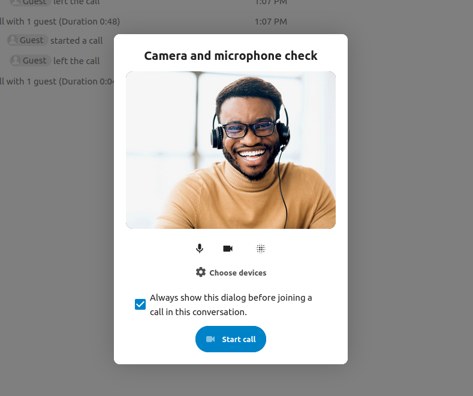

Join a call or chat as guest
Nextcloud Talk offers audio/video call and text chat integrated in Nextcloud. It offers a web interface as well as mobile apps.
Další informace o Nextcloud Talk naleznete na našem webu.
Připojení se k chatu
Pokud jste obdrželi odkaz na konverzaci v chatu, můžete si ho otevřít v prohlížeči a připojit se tak.

Své jméno můžete změnit kliknutím na tlačítko Upravit, nacházející se vpravo nahoře.

Nastavení kamery a mikrofonu naleznete v nabídce Nastavení. Naleznete tam také seznam klávesových zkratek, které je možné použít.

Joining a call
Hovor můžete kdykoli zahájit tlačítkem Zahájit hovor. Ostatní účastníci budou upozorněni a mohou se k hovoru připojit. Pokud už hovor začal někdo jiný, tlačítko se změní na zelené Připojit se k hovoru

Before actually joining the call you will see a device check, where you can pick the right camera and microphone, enable background blur or even join with any devices.
During a call, you can find the Camera and Microphone settings in the ... menu in the top bar.

During a call, you can mute your microphone and disable your video with the buttons in the top-right, or using the shortcuts M to mute audio and V to disable video. You can also use the space bar to toggle mute. When you are muted, pressing space will unmute you so you can speak until you let go of the space bar. If you are unmuted, pressing space will mute you until you let go.
Přenos obrazu z vaší kamery (užitečné při sdílení obrazovky) je možné skrýt pomocí drobné šipky nad proudem videa. Nazpět opět pomocí této šipky.
Další nastavení
V nabídce konverzace můžete přepnout na celou obrazovku. Totéž je možné udělat pomocí klávesy F. V nastavení konverzace naleznete předvolby pro upozorňování a úplný popis konverzace.